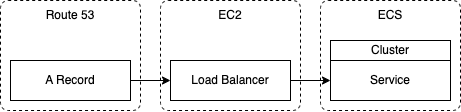

Giving an ECS Service a URL
Introduction
In this previous blog post I went through how to deploy and host a Docker container in ECS. But the resulting hosted container could only be accessed by the ECS service's public IP address and not a URL. This post fixes this by going through the steps of how to point of URL to an ECS service. This post assumes that the domain you want to use is already managed via Route 53.
The following also gives a summary of the AWS services involved that we need to create and how they relate to each other:

Create a Security Group
Firstly we need to create a security group for the load balancer. It will need to have inbound rules listening on port 80 from anywhere and for the host container port:
- IP = 0.0.0.0/0, Port range = 80
- IP = 0.0.0.0/0, Port range = [host container port]
- IP = ::/0, Port range = 80
- IP = ::/0, Port range = [host container port]
Create Health Check Endpoint
The ECS service the load balancer will be pointing to needs a health check endpoint. This is so the load balancer can check the service is healthy. In this example we'll assume that will be at /health. All it needs to be is some endpoint that returns a 200.
Create Load Balancer
It's not possible to add a load balancer to an already running ECS service. But it is possible to create a new load balancer for an ECS service during it's creation. The steps listed in the previous post can be used to create the ECS service with the following addition:
- Under Networking:
- Select the security group created above
- Under Load Balancing:
- Under Load Balancer Type select Application Load Balancer
- Give the load balancer a name
- Leave the Listener setting as Create New Listener
- Leave the Target Group setting as Create New Target Group, but in the Health Check Path update it to /health
- Create
Check Everything Works So Far
When the load balancer and ECS service are up and running. You can check the load balancer is working by finding the load balancer in EC2, finding it's DNS name, copy and paste it into a browser then you should see your site.
Point Route 53 Record to Load Balancer
The final step is to point the A record in Route 53 to the load balancer:
- Click Edit
- Under Route Traffic To select Alias to Application and Classic Load Balancer
- Pick Region
- Pick Load Balancer
- Save
Now traffic to the domain should be routed to the ECS service.